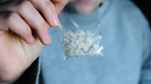

Crack Amphetamines
----------------------------------------------------------

High quality, pure white rocks. This is the real deal. Get your fix now before it’s gone.
----------------------------------------------------------
Ingredients
- Sodium hydrogen carbonate (NaHCO3)
- Sucrose (β-D-fructofuranosyl α-D-glucopyranoside)
- Zea mays starch (poly-α-(1→4)-D-glucopyranosyl-(1→4)-D-glucopyranose)
- Dihydrogen monoxide (oxidane)
- Trace amounts of tetramethylenedisulfotetramine (TETS)
- Trace amounts of N,N-dimethyltryptamine (DMT)
----------------------------------------------------------
Instructions
- Combine all dry ingredients in a laboratory-grade beaker.
- Add oxidane and stir to form a viscous slurry.
- Heat mixture over a Bunsen burner while stirring until a thick paste forms.
- Remove from heat and allow to cool to room temperature.
- Once cool enough to handle (wear gloves!), knead the paste into rocks or crystals.
- Allow to dry and harden in a chemical fume hood.
back to homepage